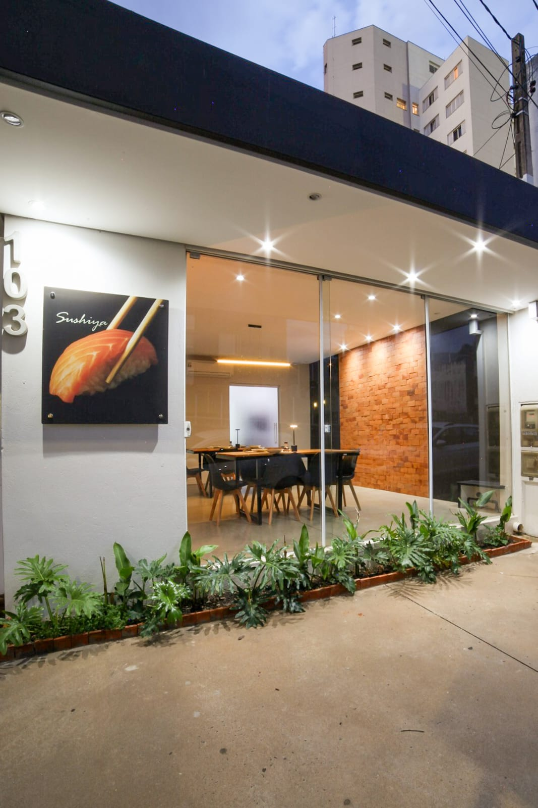

No Sushiya,
menos é mais.
Menos exagero,
menos barulho,
menos invenção sem sentido.
Aqui o foco é simples: ingrediente bom, técnica correta e respeito pelo processo.
O peixe é tratado como protagonista.
O arroz tem função, não é enchimento.
Cada corte existe por um motivo.
Não somos rodízio.
Não somos fast food.
Não fazemos sushi para impressionar no Instagram.
Fazemos sushi para quem gosta de comer bem.
